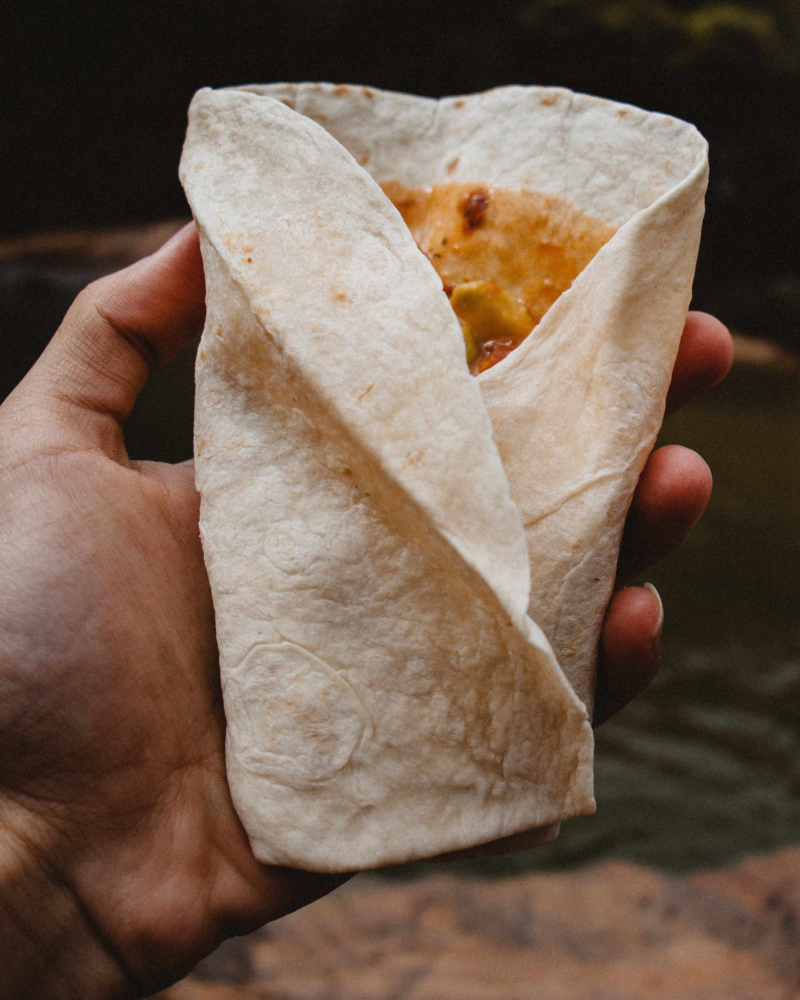

Is College Really Accessible for Everyone?
20 mins
Many colleges say that they work to help their students, but oftentimes many find themselves stuggling to see this inclusion and accessibility on their campus. This article discusses the different ways that college campus are truly inaccessible to many with a specific focus on Virginia Tech. your post. Create that "itch" to click we talked about!

Campus Safety
20 mins
Do you feel safe on your college campus? Do you feel that your campus police are doing enough to ensure transparency between students and staff in regards to incidents happening on campus? Regardless of your situation, this podcast exemplifies the perspective of four female students on Virginia Tech’s campus and their thoughts on how Virginia Tech is handling safety and security on and off campus. your podcast. Create that "itch" to click we talked about!
Quick, Easy Meals for College Students Only Using a Tortilla Shell
25 mins
An appealing description of

CHICKEN SANDWICH
45 mins
We've packed a lot into this one - shredded cabbage, carmalized onions, deep-fried chicken, chipotle mayo, half-sour pickles, and a toasted sesame bun will leave you thoroughly satisfied!

SWEET CHURROS

90 mins
Making this classic summer treat at home will remind you of a childhood spent in the park.

BERRY PARFAIT
10 mins
This low-calorie, vitamin-packed parfait is great for breakfast, dessert, or post-workout!
SWEET CHURROS
90 mins
Making this classic summer treat at home will remind you of a childhood spent in the park.
BERRY PARFAIT
10 mins
This low-calorie, vitamin-packed parfait is great for breakfast, dessert, or post-workout!